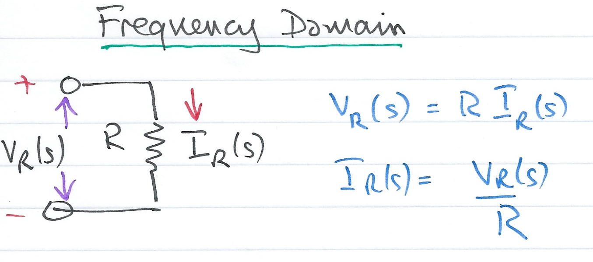
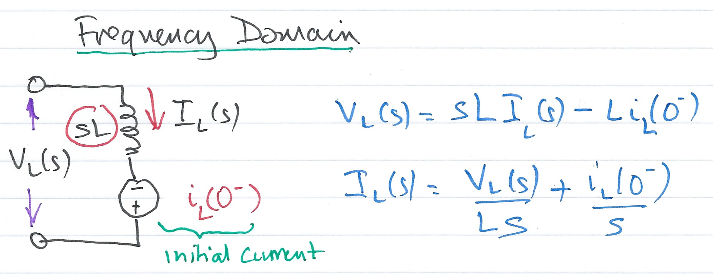
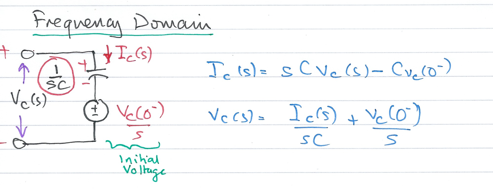

Using Laplace Transforms for Circuit Analysis¶
The preparatory reading for this section is Chapter 4 [Kar12] which presents examples of the applications of the Laplace transform for electrical solving circuit problems.
Colophon¶
An annotatable worksheet for this presentation is available as Worksheet 6.
The source code for this page is laplace_transform/3/circuit_analysis.ipynb.
You can view the notes for this presentation as a webpage (HTML).
This page is downloadable as a PDF file.
Agenda¶
We look at applications of the Laplace Transform for
Circuit transformation from Time to Complex Frequency
Complex impedance
Complex admittance
Circuit Transformation from Time to Complex Frequency¶
Time Domain Model of a Resistive Network¶

Complex Frequency Domain Model of a Resistive Circuit¶

Time Domain Model of an Inductive Network¶

Complex Frequency Domain Model of an Inductive Network¶

Time Domain Model of a Capacitive Network¶

Complex Frequency Domain of a Capacitive Network¶

Examples¶
We will work through these in class. See worksheet 6.
Complex Impedance \(Z(s)\)¶
Consider the \(s\)-domain RLC series circuit, where the initial conditions are assumed to be zero.

For this circuit, the sum
represents that total opposition to current flow. Then,
and defining the ratio \(V_s(s)/I(s)\) as \(Z(s)\), we obtain
The \(s\)-domain current \(I(s)\) can be found from
where
Since \(s = \sigma + j\omega\) is a complex number, \(Z(s)\) is also complex and is known as the complex input impedance of this RLC series circuit.
Complex Admittance \(Y(s)\)¶
Consider the \(s\)-domain GLC parallel circuit shown below where the initial conditions are zero.

For this circuit
Defining the ratio \(I_s(s)/V(s)\) as \(Y(s)\) we obtain
The \(s\)-domain voltage \(V(s)\) can be found from
where
\(Y(s)\) is complex and is known as the complex input admittance of this GLC parallel circuit.
Reference¶
See Bibliography.